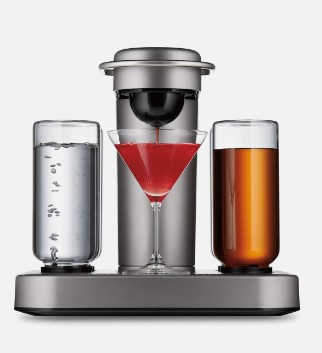

Version 1
After many hours slaved away in the lab, I have arrive at the revision one BarBot. The system allows for 6 different drink inputs transported via peristaltic motor pumps for maintaining sanitary conditions. BarBot uses hijacked button inputs from a Keurig, allowing the user to scroll through the menu on the TFT display, using buttons for Up, Down, and OK. It can pour 1 shot worth of liquid in about 10 seconds currently. The entire system is powered using 1 9V DC plug.
The Vision
My Final Project is BarBot, everyone's favorite bartending assistant.
Gone are the days of trying and failing to craft cocktails and not knowing what to do. And gone are the days of
being bogged down by countless
repetitive motions of measuring out shots. Bar bot will be similar to the now growing craze of the "Bartesian",
which works like a Keurig that
takes in a pod of cocktail mixture as well as your preferred liquors, and crafts the perfect ratio. I envision
something with a little more flexability,
variety, and user involvement.

The vision is that you can either manually select what you need from the BarBot to be dispensed (1.5 oz of some
liquor), and it will be
hooked up to all of the necessary bottles located in a discrete lower location. Then it is just a matter of
inserting the shaker or whatever
container you are using and pressing a button and it will dispense what you need. The second mode is the cool
part. There will be several NFC
cards each labeled with a different drink, you can tap the card, and the display with give you instructions on
how to craft the cocktail.
It will tell you what you need to do step by step, where you put in the non liquid ingredients, and the BarBot
will pour in everything else.
Now, anyone and everyone can be a professional bartender!
The (original) Plan
All good plans start with knowing what I will need. For the body of the BarBot, I will use extruded aluminum to
build a cage, that is
filled in with either a nice finished wood, or acrylic. Those will be the main two materials for my structure.
For the mechanical parts,
I will need a lot of tubing, stepper motors, bottle fittings, and o ring type seals to keep everything clean and
airtight. Finally for
electronics I will need to have an Arduino (Uno or eps32), NFC reader and cards, digital output display, and
assorted wires.
I hope to develop all of the electronics and mechanics through the next weeks. I want to be able to generate a
digital output based on a
NFC card being read, as well as design an efficient system for pumping up liquid approximately 3 feet without
requiring a ton of different
motors or moving parts. In terms of developing parts, I currently don't see a need for 3D printed parts, as most
everything can be fabricated
with alternative methods, but there will likely be some fittings for connecting different pieces together where
I may use 3D printing to
save some labor. If I can achieve both of those technical feats in later the weeks of the class, then I am going
to be in a really good spot.
I'll then be able to focus on putting pieces together and creating an external shell in the final weeks of the
semester, and end up with
the worlds first BarBot!
These are some sketches regarding the final project ideas


Development
The first stage of development was centered around the Minimum Viable Product (MVP). For me, this was the
pumping mechanism, specifically making a peristaltic stepper motor pump.
The development for this is linked here. At the end, I found that
the flowrate was way too low to be ~viable~ for my ~product~ at about 50ml/minute. This was due to the low
operating speed of the stepper motors.
So I eventually decided to do a a design with submergible pumps as they flow significantly faster and are very
smooth.
The main drawback to this approach was that the pumps need to be ... well submerged, which goes against the
original design with tubing that feeds out the back of the system. They also dont have any sort of pressure
regulation meaning that they cant resist the flow of gravity, so some sort of anticipation is needed to be done
regarding that. This is a preliminary sketch I made with this model.

I then began testing with this system design, as well as shifting over my parts to EPS32 based code. The Arduino
is just not powerful enough to allow the TFT to update the display in a fast enough manor, so it would be a bit
clunky (see the gif from a previous week of testing). The eps32s2 dev boards dont have all the VSPI pin outs
necessary to have an SPI communication protocol, so I had to order a different board on amazon using the esp32
WROOM chip that had all the needed pins.
The board I got was... challenging to use, it had issues with serial interference with the TFT display when
uploading code, and required pulling down GPIO0 to force a dev mode (but its what you expect when you buy an $8
board from some random shop). After a good bit of testing, I was able to get a system working where when a NFC
card is present, a pouring animation occurs while the submergible pump runs. It was a bit of a pain in the ass
to get code to work for getting the timings on the animation and pump powering, and have it look satisfying. I
decided to use a relay to control the motor, basically sending power to a input pin will close a connection,
that way it can use the 9V power supply, and not drain the esp32.
So this all seemed to work out great. So its about time to start putting everything together to create a cool
system. Then boom. We get a set of new peristaltic pumps that just used regular DC Motors, and thus operate WAY
faster than the previous model I made. They were fast enough to warrant using, so back to the drawing board I
guess. Not really, but I then decided to go back to my original design.
I had a Keurig laying around (Not much of a coffee drinker), so I decided it would be cool to try and put my
system inside of coffee maker since I was going back to non submerged pumps. So I began the journey of taking
apart the monster of a machine. I could have done it pretty quickly, but there were a lot of cool parts, like a
transformer box, a water heater, and a ton of pumps that I figured the Fabrication Lab could put to use, so I
took my time to salvage as much as possible.


Then I found this circuit board that was being used for the button control. I decided that I wanted to hijack
the board that way I could use their button system, which would give me a pretty cool effect.